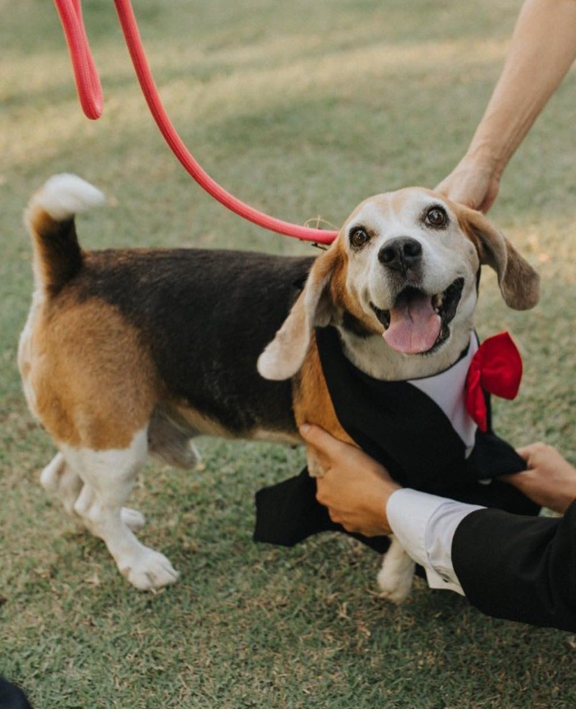

BIOGRAFIA
Soy Gabriela Peña, tengo 30 años, de Colima y soy Arquitecta. Me gusta pasar tiempo con mi familia y disfruto mucho las caminatas con mi perrhijo.
Mi mayor logro ha sido trabajar en la mina Peña Colorada, una empresa dedicada a la exploración, explotación y beneficio del mineral de hierro que satisface a la industria siderúrgica nacional. Esto me enseñó sobre la importancia de la seguridad laboral y me ayudó a contemplar el significado de trabajo seguro.
BEBIDAS FAVORITAS
- Café
- Té de manzanilla
- Agua de limón
- Jugo de naranja
- Agua de horchata
- Cerveza
MÚSICA FAVORITA
- The Killers - All These Things That I've Done
- The Killers - Just Another Girl
- Red Hot Chili Peppers - Dark Necessities
- Adam Levine - Lost Stars
- Maroon 5 - Sunday Morning
LISTA DESCRIPTIVA
- Función: Es un bloque de código que se puede llamar en cualquier momento y que realiza una tarea específica.
- let: Es una palabra clave de JavaScript que se utiliza para declarar variables con ámbito de bloque.
- const: Es una palabra clave de JavaScript que se utiliza para declarar variables con ámbito de bloque pero cuyo valor no puede ser modificado una vez asignado.
- <article>: Es una etiqueta de HTML que se utiliza para agrupar contenido temático en una página web.
- <nav>: Es una etiqueta de HTML que se utiliza para definir una sección de navegación en una página web.
- <footer>: Es una etiqueta de HTML que se utiliza para definir el pie de página de una página web.
LISTA ANIDADA
- Perros pequeños
- Chihuahua
- Pomerania
- Yorkshire terrier
- Perros medianos
- Golden retriever
- Labrador retriever
- Cocker spaniel
- Perros grandes
- San Bernardo
- Gran danés
- Mastín napolitano
Tipos de Razas
Tamaños |
| Pequeños |
Medianos |
Grandes |
| Chihuahua |
Golden retriever |
San Bernardo |
| Pomerania |
Labrador retriever |
Gran danés |
| Yorkshire terrier |
Cocker spaniel |
Mastín napolitano |